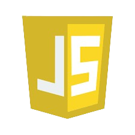

About Me

I'm a Design Technologist
A creative problem-solver with a knack for blending design and technology to craft exceptional digital experiences. I bring expertise in UI/UX, front-end development, and graphics design to deliver innovative solutions that drive results.
- Experience: 5+ years in web development
- Skills: HTML, CSS, JS, Bootstrap, etc.
- Location:Yakasai , Kano, Kano, Nigeria
My Tech Stack
HTML5
CSS3

JavaScript
JavaScript